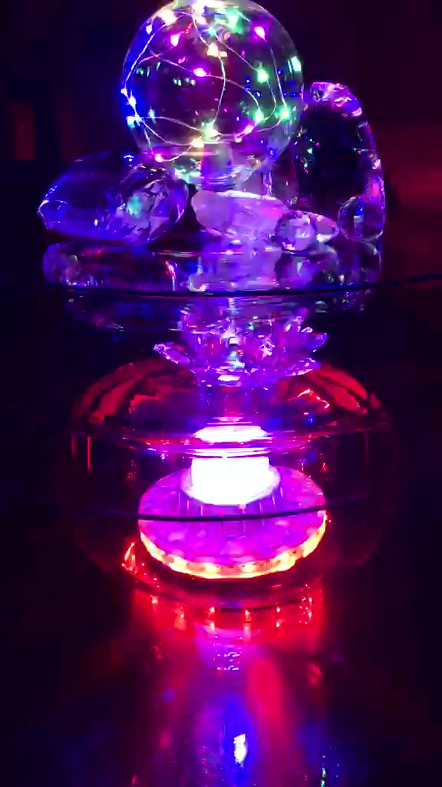
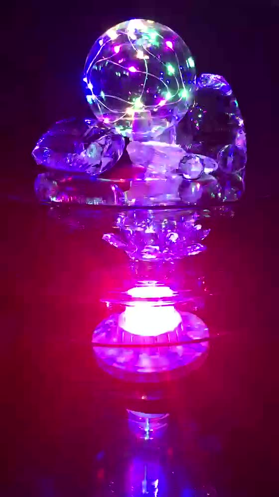

Abordagem central
Parapsicologia Clínica
O estudo das experiências humanas que fogem da explicação comum. Um espaço para falar sobre o que você não conta em outros lugares — sem julgamento, sem ridicularização, com método.
Balneário Camboriú · Atendimento online
Parapsicologia clínica, PNL e terapias integrativas para quem carrega um bloqueio que a razão sozinha não resolve — medos sem origem, padrões que se repetem, uma angústia que não passa.
Atendendo online para todo o Brasil

Para quem é
A maior parte das pessoas chega ao consultório depois de já ter tentado de tudo. Não é falta de esforço — é que a origem está guardada em outro lugar.
Fobias, sustos e travas que não têm causa visível na sua história consciente.
As mesmas brigas, os mesmos relacionamentos, o mesmo ciclo — com pessoas diferentes.
A mente que não desliga, o corpo tenso, o cansaço que dormir não resolve.
Perdas e ressentimentos que continuam pesando anos depois de terem acontecido.
Compulsões que a força de vontade sozinha não sustenta.
Saber para onde quer ir e, mesmo assim, não conseguir sair do lugar.
Especialidades
Cada pessoa chega com uma questão diferente, e nem toda questão responde à mesma técnica. Na primeira conversa definimos juntos qual caminho faz sentido para o seu caso — muitas vezes, uma combinação deles.
Abordagem central
O estudo das experiências humanas que fogem da explicação comum. Um espaço para falar sobre o que você não conta em outros lugares — sem julgamento, sem ridicularização, com método.
Reprogramação
Técnicas que trabalham a relação entre mente, corpo e linguagem. Servem para trocar padrões de comportamento que já não te servem por respostas novas e conscientes.
Memória
Acesso guiado a registros emocionais guardados no inconsciente — da vida adulta à infância e ao período pré-natal. Identificar a origem de um bloqueio costuma ser metade do caminho para desfazê-lo.
Consciência
Os princípios quânticos de observação, campo e intenção usados como modelo prático de autoconhecimento: como aquilo em que você foca sustenta — ou dissolve — a realidade que você vive.
Equilíbrio
O uso das cores e da sua frequência para trabalhar estados mentais e emocionais. Cada cor cumpre uma função: aquietar, mobilizar, aquecer, clarear.
Corpo
Estímulo de pontos específicos do pavilhão auricular com microesferas de cristal ou aço cirúrgico. Indolor, discreto e compatível com a rotina normal — o ciclo costuma durar de 15 dias a 3 meses.
Essências
Essências florais escolhidas de forma individual para estados emocionais como ansiedade, tensão, tristeza e ressentimento. O “remédio da alma”, no ritmo de cada pessoa.
Cromoterapia
O que você está vendo é o equipamento usado nas sessões presenciais: cristais atravessados por luz que muda de frequência. Cada cor entra por um caminho diferente e mexe com um estado diferente. É por isso que a sessão não usa uma cor só.
Na prática, funciona assim: conversamos, identifico o estado predominante — agitação, apatia, tensão, dispersão — e a sequência de cores é montada para aquele estado, naquele dia. Você fica sentada, relaxada, e o trabalho acontece enquanto conversamos.
O processo
Ninguém precisa chegar sabendo explicar o que sente. Essa parte é minha.
A primeira conversa é de escuta. Sem formulário, sem questionário, sem pressa. Você fala o que consegue falar, e eu vou entendendo onde a coisa está travada.
A partir do que apareceu, explico qual abordagem — ou combinação delas — faz sentido para o seu caso, e por quê. Você entende o que vamos fazer antes de fazer.
Algumas questões se resolvem em poucos encontros; processos mais antigos pedem mais tempo. Não existe pacote obrigatório: a continuidade é decisão sua, sessão a sessão.
Como funciona
Atendimento individual por videochamada, com a mesma profundidade do presencial. Para quem mora longe, viaja muito ou prefere fazer de casa.
No centro de Balneário Camboriú, dentro do Hotel Sibara Spa & Convenções, com estrutura completa e estacionamento na região.
Quatro décadas de consultoria em relações humanas aplicadas a equipes: comunicação, gestão de conflito e clima organizacional, com base em PNL.

Sobre
Parapsicóloga clínica, psicoterapeuta, professora e palestrante. Atende em Balneário Camboriú há mais de quatro décadas, com formação construída entre Brasil, Argentina e Estados Unidos.
Formou-se pela Associação Ibero-americana de Parapsicologia, em Buenos Aires, e pelo Instituto de Parapsicologia e Ciências Mentais de Joinville. É pós-graduada em Ciências da Mente pelo Instituto de Pós-Graduação de Santa Catarina, especialista em Relações Humanas pelo IPSC e Master em Programação Neurolinguística pelo Instituto de Pesquisa das Áreas Fronteiriças da Parapsicologia, em São Paulo. Completou ainda formação no Louise Hay Institute, em Santa Mônica, na Califórnia.
Ao longo desses anos, atuou também como consultora de empresas na área de relações humanas, levando para dentro das organizações o mesmo trabalho que faz no consultório: entender o que move as pessoas por baixo do que elas dizem.
Parapsicologia clínica ao seu alcance.
Dúvidas frequentes
Não. O trabalho é de estudo e escuta, não de fé. Pessoas de todas as religiões — e pessoas sem religião nenhuma — são atendidas da mesma forma. Nada do que você acredita precisa mudar para o processo funcionar.
Não substitui, e nunca deve substituir. São terapias complementares e integrativas: caminham ao lado do acompanhamento de saúde que você já faz. Se você toma medicação prescrita, continue tomando e mantenha seu médico informado.
Depende inteiramente do que você traz. Algumas questões pontuais se resolvem em poucos encontros; processos mais antigos pedem mais tempo. Na primeira sessão isso fica mais claro, e você decide o ritmo.
Para as abordagens de conversa, regressão e PNL, sim — o que importa é a escuta, e ela atravessa a tela sem perda. Auriculoterapia é a exceção: por envolver aplicação no ouvido, precisa ser presencial.
Você permanece consciente o tempo inteiro, em estado de relaxamento profundo, conduzida por perguntas. Ninguém perde o controle nem faz nada contra a própria vontade. Você lembra de tudo depois.
Pelo WhatsApp ou telefone. Me conte em poucas linhas o que está buscando, e eu retorno com os horários disponíveis e o formato — online ou presencial — que faz mais sentido para o seu caso.
Primeiro passo
Você não precisa saber explicar o que está sentindo para marcar a primeira sessão. Me manda uma mensagem contando o que te trouxe até aqui — eu respondo pessoalmente.
Contato
Telefone
(47) 3264-1254Consultório
Av. Brasil, 1500 — Sala 400
Centro, Balneário Camboriú — SC
88330-048
Onde fica
Hotel Sibara Spa & ConvençõesAv. Brasil, 1500 — Sala 400, Centro
Balneário Camboriú, Santa Catarina